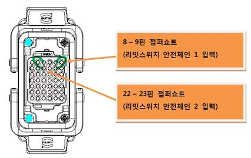

경고(Warning)
케이블의 연결 및 제거 시에는 반드시 제어기의 전원이 꺼진 상태에서 실행하십시오. 전기적 위험은 인명사고 및 재산사고를 일으킬 수 있습니다.
하드웨어 리밋이 비정상적으로 작동했을 경우 점검하기 위한 방법은 다음을 참조하십시오.
(1) 스위치 상태 모니터링
하드웨어 리밋 입력상태는 티칭펜던트의 전용 입력신호 창을 통해 확인할 수 있습니다.
이 창은 “『[F1]: 서비스』 → 『1: 모니터링』 → 『2: 입출력 신호』 → 『1: 전용 입력신호』”를 선택하면 볼 수 있습니다. 리밋(Over-Travel) 항목이 황색표시가 되어 있으면 하드웨어 리밋 스위치가 작동(open), 즉 로봇이 하드웨어 동작영역을 이탈한 것입니다.
l 주의 :
수동모드에서는 티칭펜던트의 인에이블링 스위치를 ON시켜야 모니터링이 됩니다. 자동모드에서는 인에이블링 스위치 상태와 관계없이 모니터링 됩니다.
그림 1.128 하드웨어 리밋스위치 입력상태 표시(티칭펜던트 화면)
(2) 하드웨어 리밋 스위치 배선구조
리밋스위치와 관련된 구성품에서 원인을 찾기 위해서는 배선구조를 알아야 합니다. 리밋스위치는 다음 그림과 같이 기구본체 내부의 리밋스위치로부터 시작하여 케이블을 통해 제어기 내부의 시스템보드에 연결됩니다.
n 리밋스위치 및 기구본체 배선
n 와이어하니스 및 커넥터 (CER1 – CEC1)
n 제어기 내부 배선 및 커넥터 (CEC1 – CNLS)
n 시스템보드 (BD530)
그림 1.129 하드웨어 리밋 스위치 배선구조
그림 1.130 하드웨어 리밋스위치 배선 상세
(3) 하드웨어 리밋스위치 점검방법
n 시스템보드 커넥터(CNLS)에서 점검하는 방법
|
경고(Warning) 케이블의 연결 및 제거 시에는 반드시 제어기의 전원이 꺼진 상태에서 실행하십시오. 전기적 위험은 인명사고 및 재산사고를 일으킬 수 있습니다. |
시스템보드의 CNLS커넥터를 통해서 보드의 고장인지를 판단하는 것입니다. 아래의 그림과 같이 CNLS커넥터에서 리밋스위치 입력과 관련된 핀을 점퍼쇼트 하십시오. 이 상태에서 전용입력신호 모니터링 창을 통하여 리밋(Over-Travel) 항목을 확인하십시오.
③ 백색으로 바뀌었다면, 시스템보드의 고장입니다. 보드를 교체하십시오.
④ 황색으로 여전히 에러상태라면, 시스템보드 이후 본체 리밋스위치까지의 영역에서 고장을 체크하십시오.
n 와이어 하니스(CER1 또는 CEC1)에서 점검하는 방법
|
경고(Warning) 케이블의 연결 및 제거 시에는 반드시 제어기의 전원이 꺼진 상태에서 실행하십시오. 전기적 위험은 인명사고 및 재산사고를 일으킬 수 있습니다. |
와이어하니스 커넥터 CER1 또는 CEC1를 통해서 케이블 고장인지를 판단하는 것입니다. 우선 제어기로부터 CEC1 와이어하니스를 제거한 후, 제어기에 부착되어 있는 CEC1 커넥터에서 리밋스위치관련 핀을 점퍼쇼트하십시오. 이 상태에서 전용입력신호 모니터링 창을 통하여 리밋(Over-Travel) 항목을 확인하십시오.
③ 백색으로 바뀌었다면,
제어기 내부의 CEC1커넥터-시스템보드 간 케이블 또는 커넥터의 고장입니다. 이를 점검하거나 교체하십시오.
④ 황색으로 여전히 에러상태라면,
CEC1커넥터 이후 본체 리밋스위치까지의 영역에서 고장을 체크하십시오.
CEC1 와이어하니스를 다시 연결하고 본체로부터 CER1 와이어하니스를 제거한 후, 와이어하니스의 CER1커넥터에서 리밋스위치관련 핀을 점퍼쇼트하십시오. 이 상태에서 전용입력신호 모니터링 창을 통하여 리밋(Over-Travel) 항목의 상태를 확인하십시오.
③ 백색으로 바뀌었다면,
CER1커넥터-CEC1커넥터 간 와이어하니스 케이블 또는 커넥터의 고장입니다. 이를 점검하거나 교체하십시오.
④ 황색으로 여전히 에러상태라면,
본체 쪽 CER1커넥터 이후 리밋스위치까지의 영역에서 고장을 체크하십시오.

n 리밋스위치 및 본체 내부 배선을 점검하는 방법
|
경고(Warning) 케이블의 연결 및 제거 시에는 반드시 제어기의 전원이 꺼진 상태에서 실행하십시오. 전기적 위험은 인명사고 및 재산사고를 일으킬 수 있습니다. |
본체로부터 CER1 와이어하니스를 제거한 후, 본체의 CER1커넥터에서 리밋스위치관련 라인에 이상이 있는지 멀티미터를 사용하여 쇼트 테스트하십시오.
③ 저항이 오픈상태로 측정되었다면,
리밋스위치 또는 리밋스위치-CER1 간 커넥터 또는 커넥터의 고장입니다.
이를 점검하거나 교체하십시오.
④ 저항이 쇼트상태로 측정되었다면,
다른 부분의 고장을 체크하여야 합니다. 당사에 문의하십시오.